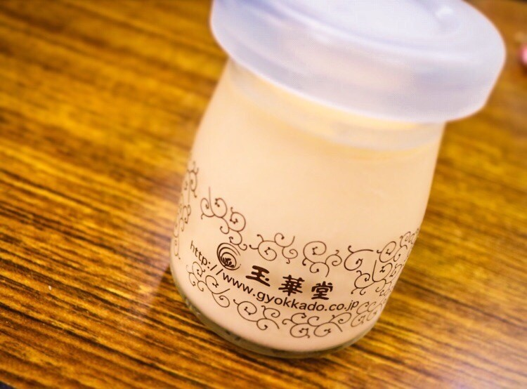

| 2017/02 11 Sat | 斎藤ちはる おじいちゃんおばあちゃん孝行 |
ちはるーむへようこそ
時間の合間を縫って
おばあちゃんちに行って
のんびりご飯を食べている時間が
本当に幸せで仕方がない。
筑前煮や豚汁や肉巻きやかき揚げやイカと大根の煮物など
沢山食べちゃった( ¨̮ )( ¨̮ )( ¨̮ )
今日は少し作りすぎたわね〜って
言ってたおばあちゃん。
張り切って準備してくれたのかなと考えると
凄い嬉しいし、心がほっこりする。
いつも笑ってて楽しそうなの！
その笑い声聞くと幸せな気分になるんだ〜
先日おばあちゃんも誕生日を迎えたんだけど
とっても若く見えるんだ。
え！？そんな歳なの！？って思うくらい。
おばあちゃんとおじいちゃんには
いつまでも元気でいてほしいな☺︎
沢山旅行にも行きたいし
沢山料理も教わりたい。
おじいちゃんおばあちゃん孝行したい。
----------------------------------------♡
◎ChihaFood◎

握手会の差し入れで3種類の
プリン食べ比べっていうのがあって
その中でもわたしが1番好きだったプリン！
「玉華堂さんの極プリン(プレーン)」
美味しすぎて衝撃を受けました！
とろとろで滑らかで
ずっと食べていたいくらい。
実は私はプリンのカラメルの部分が
あんまり好きではなくて
普段食べないことが多いのですが
ここのカラメルの程よい苦味に
ハマってしまいました...！
あ〜また食べたくなってきた...
今まで食べたプリンの中で1番かも。
----------------------------------------♡
♬ ChihaMusic
「やってみよう」WANIMAさん
CMで流れていて気になって
聞いてみたらキャッチーだし
メロディーも明るくて素敵！
そして歌詞も本当良くて、
勇気つけられる。
"踏み出そう よじ登ろう
高い山ほど 絶景が待ってるから"
失敗してもいい、
とにかく前へ進めばいい。
辛い時があっても
それを乗り越えたら絶対いいことが待ってる。
頑張ろうという気持ちになれる曲。
月刊エンタメオフショット◎
出来るようになりたい髪型
第1位 フィッシュボーン。
自分で出来たらかっこいいよね〜
優里出来るんだよ！
女子力高い☺︎
おやすみ
斎藤ちはる